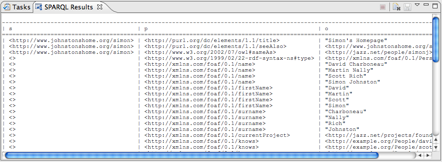

The SPARQL Results View provides a simple, text-based output console for query results.

The following table summarizes the actions available from the toolbar and context menus associated with this view.
| Icon | Action | Context | Comments |
|---|---|---|---|
|
Stop | N/A | Stop any running queries (if possible). |
| Clear | NA | Clear all content from the view. | |
|
Save | N/A | Save the content in the view to a resource. |